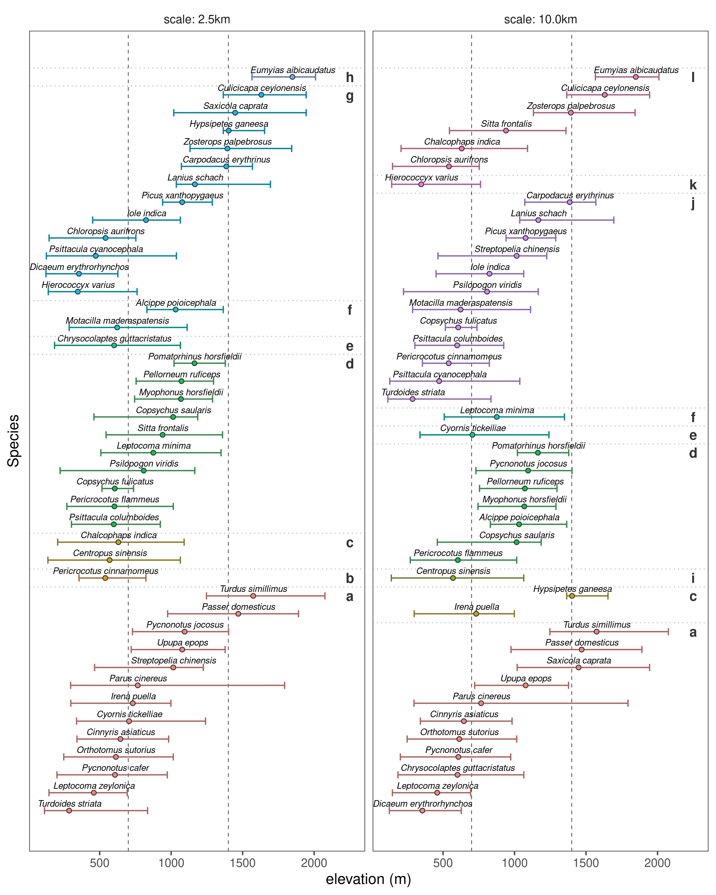

Section 7 Results
7.1 Prepare libraries
7.2 Prepare data
# load data
data <- list.files(path = "data/results",
pattern = "ElevationSummary",
full.names = TRUE)
data <- lapply(data, read_csv)
# attach scale
sp_scale <- c("10.0km", "2.5km")
data <- purrr::map2(data, sp_scale, function(df, sp_scale){
df$scale = sp_scale
return(df)
})
# prepare data
data <- data %>%
bind_rows() %>%
group_by(scale) %>%
arrange(Hypothesis, median) %>%
group_by(scale) %>%
mutate(plot_order = 1:length(median)) %>%
ungroup() %>%
mutate(scale = as_factor(scale))
# plot positions of hypothesis code
data_hyp <- count(data, scale, Hypothesis) %>%
group_by(scale) %>%
mutate(plot_pos = cumsum(n)) %>%
ungroup() %>%
mutate(Hypothesis = as_factor(Hypothesis),
plot_letter = letters[as.numeric(Hypothesis)])7.3 Main text Figure 3
# make figure 3 using option 1
fig_hypothesis_elev <-
ggplot(data, aes(x = plot_order, y = median,
col = Hypothesis))+
geom_hline(yintercept = c(700,1400),
lty = 2, size = 0.2)+
geom_errorbar(width = 0.4,
aes(ymin = q1, ymax = q3,))+
geom_point(aes(fill = Hypothesis),
shape = 21, col = "grey20")+
geom_text(aes(label = Species),
size = 2.5,
fontface = "italic",
nudge_x = 0.4, col = "black")+
geom_text(data = data_hyp,
aes(x = plot_pos, y = 2250,
label = plot_letter),
col = "grey20", fontface = "bold")+
geom_vline(data = data_hyp,
aes(xintercept = plot_pos + 0.5),
lty = 3, lwd = 0.4, col = "grey")+
scale_color_hue(l = 50, c = 50)+
scale_fill_hue(l = 70)+
theme_few()+
theme(legend.position = "none",
legend.key = element_rect(colour = "white",
size = 0.3),
axis.text.y = element_blank(),
axis.ticks.y = element_blank())+
labs(y = "elevation (m)", x = "Species",
colour = "Best supported\nhypothesis")+
coord_flip()+
facet_wrap(~scale, labeller = label_both)
# save figure
# save figure
ggsave(fig_hypothesis_elev,
filename = "figs/fig_hyp_elev.png",
height = 10, width = 8)
7.4 Plot supplementary Figure 3
This figure is intended to show the change (or not) in best supported hypothesis between spatial scales.
7.4.1 Prepare data
# load data again
data <- list.files(path = "data/results",
pattern = "ElevationSummary",
full.names = TRUE)
data <- lapply(data, read_csv)
# attach scale
sp_scale <- c("10.0km", "2.5km")
data <- purrr::map2(data, sp_scale, function(df, sp_scale){
df$scale = sp_scale
return(df)
})
# unlist and prepare to plot
data <- data %>%
bind_rows() %>%
arrange(Hypothesis) %>%
# select(Species, median, Hypothesis, scale)
mutate(Hypothesis = as_factor(Hypothesis)) %>%
pivot_wider(names_from = "scale",
values_from = "Hypothesis",
names_prefix = "hypothesis_")
# set order
data <- arrange(data, median) %>%
ungroup() %>%
mutate(plot_order = 1:nrow(data))# make figure 3 for supplementary material
fig_hypothesis_elev_supp <-
ggplot(data, aes(x = plot_order,
y = median, ymin = q1, ymax = q3))+
geom_hline(yintercept = c(700,1400),
lty = 2, size = 0.2)+
geom_errorbar(size = 0.3, width = 0.4)+
geom_point(fill = "grey", shape = 21)+
geom_text(aes(label = Species),
size = 3,
fontface = "italic",
nudge_x = 0.5)+
geom_label(aes(y = 2500,
col = hypothesis_10.0km,
label = as.numeric(hypothesis_10.0km)),
label.padding = unit(0.2, "lines"),
fontface = "bold",
fill = "grey95", size = 3)+
geom_label(aes(y = 2250,
col = hypothesis_2.5km,
label = as.numeric(hypothesis_2.5km)),
label.padding = unit(0.2, "lines"),
fontface = "bold",
fill = "grey95", size = 3)+
annotate(geom = "text",
x = c(45, 43, 43), y = c(2375, 2250, 2500),
label = c("best supported\nhypothesis","2.5km", "10km"))+
scale_colour_scico_d(end = 0.6)+
scale_y_continuous(breaks = c(seq(0, 2000, 500)))+
# scale_fill_hue(l = 100, c = 50)+
coord_flip()+
theme_few()+
theme(legend.position = "none",
legend.key = element_rect(colour = "white",
size = 0.3),
axis.text.y = element_blank(),
axis.ticks.y = element_blank())+
labs(y = "elevation (m)", x = "Species",
colour = "Best supported\nhypothesis")
# save figure
ggsave(fig_hypothesis_elev_supp,
filename = "figs/fig_hyp_elev_supp.png",
height = 10, width = 6)